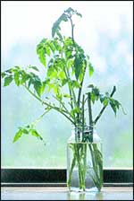
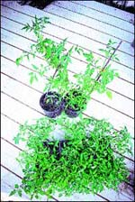

Real Food Winter Tomatoes
With the right light, you can grow tomatoes indoors all through the winter.
By David Cavagnaro
October/November 2004
Just one encounter with a tasteless, artificially ripened, imported winter supermarket tomato makes you want to grow your own tangy, sweet-tasting tomatoes in the off-season.
It sure did me, and I met with enough initial success that I continued refining my technique until now, in a good winter, at peak production, a single plant in my window produces a pint of cherry or pear tomatoes every day or two. Here’s how to do this yourself:
Although many varieties of “compact” bush tomatoes are advertised as good for container production, they won’t perform well over a long winter. These are “determinate” varieties - plants with branches that grow to a certain length and then stop. They produce a finite number of fruits over a limited period, certainly far less time than a long stretch of northern winter.
Better options for indoor winter tomatoes are “indeterminate” varieties, those that continue growing and producing indefinitely. Furthermore, I’ve found that cherry and plum types, bearing small fruits in abundance, are more productive than large slicing types.
Favorite varieties
Because indeterminate vines bear a blossom cluster at each node, and the stems between nodes grow longer indoors in the dimmer light of winter than they would outdoors in summer, I recommend you choose from among the less-vigorous indeterminate varieties on the market, lest the vine take over the house without bearing much fruit. My favorite choices are old-fashioned ‘Yellow Pear’ and an unnamed, less vigorous red variety that I’ve grown for years, but the red ‘Tommy Toe’, an Ozark heirloom and frequent winner of taste tests, and ‘Pink Ping Pong’, called “very sweet, smooth and juicy” by heirloom tomato expert Carolyn Male, are worth growing this way, too.
Sufficient light is paramount for successful indoor cherry tomato production. Choose a window as nearly floor-to-ceiling in height and as south-facing as possible. Large picture windows or sunroom exposures are ideal.
A large-enough container will be needed at the outset, too. Choose a 5-gallon container at a minimum, and 10 is even better, to support the rather massive winter-long growth that will accumulate.
To get a head start, you can start your indoor plants from cuttings at the end of the summer. If grown from seed, indeterminate varieties must reach several feet in height before the first blooms appear, so the cuttings save precious time. To start your own, cut a branch from a favorite variety in your garden in late summer, section it into several cuttings, each with two sets of leaves. Clip off all but one leaf at the top and place the whole bundle in a jar of water in a sunny indoor window.
Ready to Root and bloom
The lower sections of long vines are already covered with bumps that are roots just waiting to grow, so rooting will take place very quickly using these lower, older parts of stems. After cuttings root, pot them up and keep them outdoors, in full sun, until frost threatens. They should be well in bloom when you move them indoors, and these mature stems will produce blossoms immediately on new growth.
Train the plant, which will grow like a climbing vine, on a sturdy string trellis tied from and between small nails solidly hammered into a window frame, or build an independent trellis. Just be sure to accommodate the considerable weight of a huge vine amply loaded with many quarts of ripening fruit.
Regular fertilization is a must to support the vigorous growth of an indeterminate tomato vine. Fish emulsion or any other liquid nutrient mix will do. Just follow the instructions on the product label.
Also, be sure to consider pollination and potential pests. Tomato blossoms are internally pollinated, an act aided outdoors by the vibratory action of wind and visiting bees. To mimic such vibration indoors, lightly tap or shake the vines each time you water, or turn a fan on them.
Insect pests can be a much more difficult problem to solve. You can control aphids with a batch of ladybugs, which you can buy commercially or which, since the invasion of the Asian variety, you may already have in abundance in your garden.
Whiteflies, once established on an indoor tomato plant, eventually will defoliate and kill it. The best solution is to be extremely careful to not introduce these insects indoors in the first place. Also, install yellow sticky traps (widely available online) before you notice any whiteflies, to catch any that sneak inside.
The same can be said for spider mites. Both of these pests also attack a variety of houseplants and are extremely difficult to control, especially on an edible crop where only nontoxic controls would be acceptable.
One final advantage to growing a tomato vine indoors in winter becomes clear in spring: You have a ready source of plant material from which to take blossoming cuttings for a jump start on the outdoor tomato season of summer.
Simply repeat the procedure used in the fall by rooting cuttings well enough in a dvance of the growing season that you have potted vines already in bloom in time to set out as soon as any danger of frost has passed. These plants will bear a good month or more in advance of even the earliest varieties you could start from seed in the spring, offering once again, at their natural time, the delicious, sweet-sharp taste of vine-ripened, sun-warmed tomatoes.
David Cavagnaro is a veteran garden photographer who lives and gardens near Decorah, Iowa.
 Photo By David Cavagnaro 1 Root the cuttings. |
 Photo By David Cavagnaro 2 Pot the cuttings. |
 Photo By David Cavagnaro 3 Serve the harvest forth. |
|
Photo By David Cavagnaro |
|
|